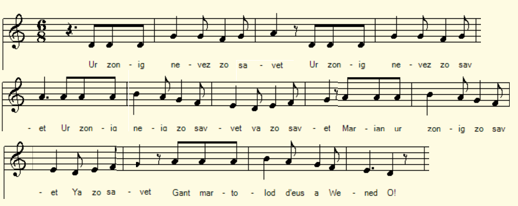
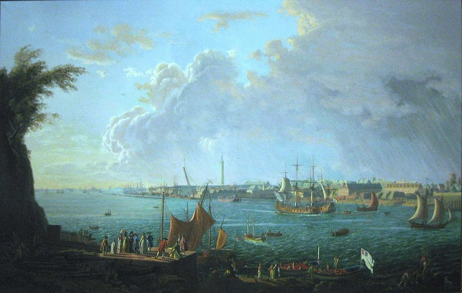

Ur zonig nevez
Chanson nouvelle
A new song
Chant tiré du 2ème Carnet de collecte de La Villemarqué (p. 195 - 112).
Mélodie
Arrangement Christian Souchon (c) 2020
|
A propos de la mélodie Inconnue. La présente mélodie accompagne le chant "Jan-Glaod Inet" collecté par l'Abbé François Cadic (Paroisse Bretonne de Paris, août-septembre 1925). A propos du texte Apparemment La Villemarqué est le seul a avoir collecté ce chant qui semble avoir trait à la création du Port de Lorrient à partir de 1666. |
About the tune Unknown. This melody accompanies the song "Jan-Glaod Inet" collected by Abbé François Cadic (Paroisse Bretonne de Paris, August-September 1925). About the lyrics Apparently La Villemarqué is the only one to have collected this song which seems to relate to the creation of the Port of Lorrient from 1666. |
|
p. 195 / 112 Zon 1. Ur zonig nevez zo savet Ur zonig nevez zo savet Marjan, ur zonig zo savet Gant martolod d'eus a Wened 2. Hennezh zo mignon da verc'hed, Hennezh zo mignon da verc'hed, Ispisial d’ar beizanted Re-se gante koefoù sparlet. [1] 3. - Deuit-c'hwi ganin en Oriant.[2] Deuit-c'hwi ganin en Oriant. Ha m['ho] lakay 'n ur batimant Lec’h vo na brezel na tourmant. 4. Skrivet en-deus komis Gwened, [3] Ul li(zh)er d’e vartoloded, Da c’hounit arc'hant d'ar merc'hed Ha d’o bugale mar vo ret, 5. Deuit-c'hwi ganin d’an Oriant Ha me n'ho lakay en ho c’hoant Yann Zaoz zo 'r gwall-baotr war ar mor Tenna boledoù barzh an dour! KLT gant Christian Souchon (c) 2020 |
p.195 / 112 Chanson nouvelle 1. Ce chant nouveau que je déclame Ce chant que je veux vous chanter Il fut composé, Marie-Jeanne, Par un matelot vannetais. 2. C'était l'ami de nos fillettes, Oui des femmes c'était l'ami Qu'ornent les coiffes à barrette De nos paysannes ici. 3. - A Lorient veux-tu me suivre? Veux-tu me suivre à Lorient? Tu logeras sur un navire Loin de la guerre et ses tourments. 4. Car la Commission de Vannes, Vient d''envoyer aux matelots, Un mandat pour nourrir leurs femmes Et leur marmaille, s'il le faut, 5. A Lorient, suis-moi la belle: La misère n'est plus ton lot. De Jean l'Anglais la mer rebelle: Fait tirer les boulets dans l'eau ! Traduction Christian Souchon (c) 2020 |
p.195 / 112 A new song 1. A brand new ditty has been made, A brand new ditty has been made, A brand new ditty, Marie-Jeanne, Was made by a sailor from Vannes 2. To all women he was a friend, To all women he was a friend, Especially to those who wear A barrette headdress on their hair. 3. - Come, follow me to Lorient. Come, follow me to Lorient. A man-of-war will be our lair, Free from war and pain we'll be there. 4. There was sent by the Board of Vannes A letter to all sailormen, They shall earn money for their wives, If any, help their children thrive, 5. Now, come with me to Lorient: You'll never be in need or want. John Bull at sea does not matter, Shoots all his balls in the water! |
NOTES
|
[1] Sparl: Partie d'une coiffe qui se relève des deux côtés de tête. [2] An Oriant: (L'Orient puis Lorient]. L'histoire de la ville commence en 1666 lorsque la compagnie des Indes orientales obtient de Louis XIV des terrains pour établir ses installations au lieu-dit du Faouédic. La Marine royale s'y établit aussi dès 1688 pour y faire construire des bateaux. L'Arsenal de Lorient produira de nombreux bateaux lors des siècles suivants, y compris les premiers cuirassés français.. [3] Komis Gwened:: La Commission intermédiaire de Vannes. Organe chargé, sous l'ancien régime, d'appliquer localement les décisions du Parlement de Bretagne. |
[1] Sparl: Part of a headdress that rises on both sides of the head. [2] An Oriant : (L'Orient then Lorient]. The history of the city begins in 1666 when the East India Company obtained land from Louis XIV to establish its facilities at the locality Faouédic. The Royal Navy also settled there in 1688 to have boats built there. The Lorient Arsenal produced many boats during the following centuries, including the first French battleships. [3] Komis Gwened :: The Vannes Intermediate Commission was a body in charge, under the old regime, of locally applying the decisions of the Parliament of Brittany. |

Lorient au 18ème siècle
Ce chant est suivi de - This song is followed by
Al louarn -Le renard - The Fox (1ère partie)
Floc'h Loeiz Trizek
Annaïk Lukaz
An amzer dremenet (dernière partie)
Buhez Doue
Paotred Plouyeo
Ar Re C'hlas